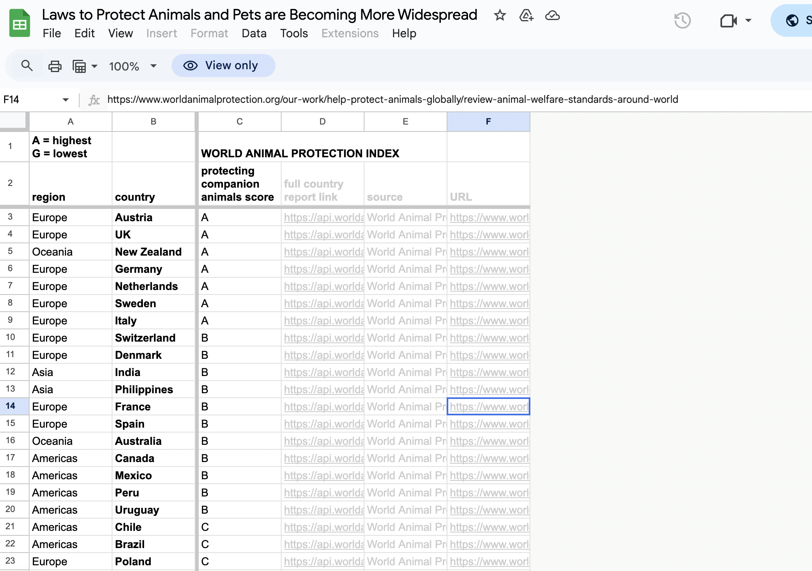

Visualization



Source: [Source Name]
Critique
Information Resolution
The graphic that I chose to look at was the laws to protect animals and pets are being more widespread.According to Tufte’s definition of resolution, this graphic doesn’t necessarily fit it as it doesn’t have a lot of words. However, it is comprehensive in the way that it displays the information with the map of the world and the different colors it uses to show the different regions. The dots that make up the map represent how companion animals are protected based on how much white the dots show compared to how faded they are. It also doesn’t summarize the information with bullet points, it just lists the laws and has data that explains why it happened. I think that the graphic is easy for the viewers to follow and it doesn’t overload them with too much information or too many photos and few words. The graphic also appeals to the emotions of the viewers with them caring about the animals and knowing about these issues. It does not fall into the trap of powerpoint where it ends summarizing too much of the information.
[Additional Concern 1]
I think the graphic does a great job at showing the effects without the causes. The main information is the graphic that viewers get to see are just the laws that are passed as an effect due to the causes. We as people who have lived in the world understand through our experiences that people do bad things to animals, so we do not need the causes explained to us. There are causes provided underneath the graphic or in the article, but a person can understand the graphic perfectly fine without knowing the causes.
[Additional Concern 2]
I do not think that the graphic rushes to conclusions. These are laws and really do not show data, the article does reinforce passing the laws by detailing the things that people did to animals to make these laws pass. I also found a link to data to back up why the laws were passed and those go into detail and prove why we should pass those.
[Additional Concern 3]
This is the best thing that the graphic does is how overreaching it is. I think that the conclusions are extended much beyond what the data is telling us. This graphic appeals to the emotions of people as most will care for animals. These conclusions can also lead to more reform if other areas nearby see that the areas close to them then they may decide to pass laws too. I see this graphic as a call for reform and it would just take seeing these laws and what these governments are doing to get others to want to pass similar laws.
Conclusion
Overall, the graphic does a really good job at showing the laws in the world that have been passed to help with animals and pets. These areas are normally the ones that have more animals compared to other areas. It is also well done with the color coordinated areas and which countries have been more welcome to make these laws to help animals while which countries have been slower to pass these laws.